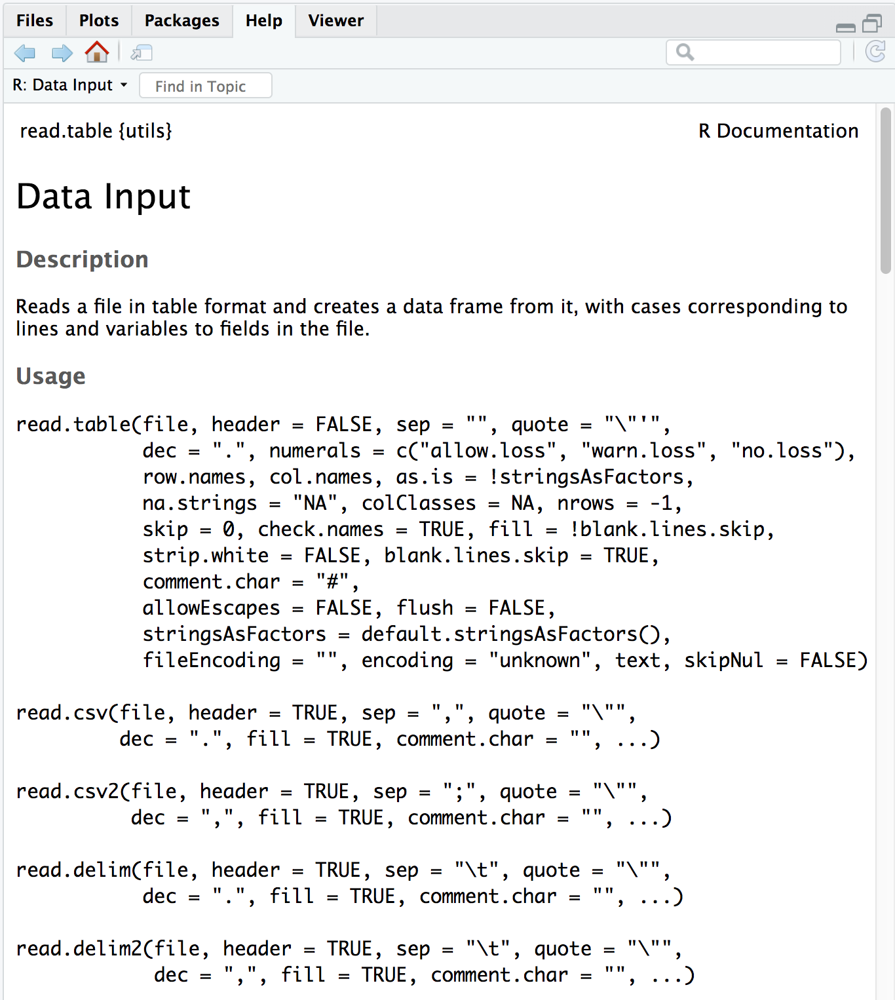

Reading in and inspecting data
RMDA ARES40011
Learning Objectives
- Demonstrate how to read existing data into R
- Utilize base R functions to inspect data structures
Reading data into R
The basics
Regardless of the specific analysis in R we are performing, we usually need to bring data in for any analysis being done in R, so learning how to read in data is a crucial component of learning to use R.
Many functions exist to read data in, and the function in R you use will depend on the file format being read in. Below we have a table with some examples of functions that can be used for importing some common text data types (plain text).
| Data type | Extension | Function | Package |
|---|---|---|---|
| Comma separated values | csv | read.csv() |
utils (default) |
read_csv() |
readr (tidyverse) | ||
| Tab separated values | tsv | read_tsv() |
readr |
| Other delimited formats | txt | read.table() |
utils |
read_table() |
readr | ||
read_delim() |
readr |
For example, if we have text file where the columns are separated by commas (comma-separated values or comma-delimited), you could use the function read.csv. However, if the data are separated by a different delimiter in a text file (e.g. “:”, “;”, ” “,”), you could use the generic read.table function and specify the delimiter (sep = " ") as an argument in the function.
Note: The
"\t"delimiter is shorthand for tab.
In the above table we refer to base R functions as being contained in the “utils” package. In addition to base R functions, we have also listed functions from some other packages that can be used to import data, specifically the “readr” package that installs when you install the “tidyverse” suite of packages.
In addition to plain text files, you can also import data from other statistical analysis packages and Excel using functions from different packages.
| Data type | Extension | Function | Package |
|---|---|---|---|
| Stata version 13-14 | dta | readdta() |
haven |
| Stata version 7-12 | dta | read.dta() |
foreign |
| SPSS | sav | read.spss() |
foreign |
| SAS | sas7bdat | read.sas7bdat() |
sas7bdat |
| Excel | xlsx, xls | read_excel() |
readxl (tidyverse) |
Note, that these lists are not comprehensive, and may other functions exist for importing data. Once you have been using R for a bit, maybe you will have a preference for which functions you prefer to use for which data type.
Metadata
When working with large datasets, you will very likely be working with “metadata” file which contains the information about each sample in your dataset.

The metadata is very important information and we encourage you to think about creating a document with as much metadata you can record before you bring the data into R. Here is some additional reading on metadata from the HMS Data Management Working Group.
The read.csv() function
Let’s bring in the metadata file we downloaded earlier (mouse_exp_design.csv or mouse_exp_design.txt) using the read.csv function.
First, check the arguments for the function using the ? to ensure that you are entering all the information appropriately:
?read.csv
The first thing you will notice is that you’ve pulled up the documentation for read.table(), this is because that is the parent function and all the other functions are in the same family.
The next item on the documentation page is the function Description, which specifies that the output of this set of functions is going to be a data frame - “Reads a file in table format and creates a data frame from it, with cases corresponding to lines and variables to fields in the file.”
In usage, all of the arguments listed for read.table() are the default values for all of the family members unless otherwise specified for a given function. Let’s take a look at 2 examples: 1. The separator - * in the case of read.table() it is sep = "" (space or tab) * whereas for read.csv() it is sep = "," (a comma). 2. The header - This argument refers to the column headers that may (TRUE) or may not (FALSE) exist in the plain text file you are reading in. * in the case of read.table() it is header = FALSE (by default, it assumes you do not have column names) * whereas for read.csv() it is header = TRUE (by default, it assumes that all your columns have names listed).
The take-home from the “Usage” section for read.csv() is that it has one mandatory argument, the path to the file and filename in quotations; in our case that is data/mouse_exp_design.csv or data/mouse_exp_design.txt.
The
stringsAsFactorsargumentNote that the
read.table {utils}family of functions has an argument calledstringsAsFactors, which by default is set to FALSE (you can double check this by searching the Help tab forread.tableor running?read.tablein the console).If
stringsAsFactors = TRUE, any function in this family of functions will coercecharactercolumns in the data you are reading in tofactorcolumns (i.e., coerce fromvectortofactor) in the resulting data frame.If you want to maintain the
character vectordata structure (e.g., for gene names), you will want to make sure thatstringsAsFactors = FALSE.
Create a data frame by reading in the file
At this point, please check the extension for the mouse_exp_design file within your data folder. You will have to type it accordingly within the read.csv() function.
read.csvis not fussy about extensions for plain text files, so even though the file we are reading in is a comma-separated value file, it will be read in properly even with a.txtextension.
Let’s read in the mouse_exp_design file and create a new data frame called metadata.
metadata <- read.csv(file="data/mouse_exp_design.csv")
# OR
# metadata <- read.csv(file="data/mouse_exp_design.txt")NOTE: RStudio supports the automatic completion of code using the Tab key. This is especially helpful for when reading in files to ensure the correct file path. The tab completion feature also provides a shortcut to listing objects, and inline help for functions. Tab completion is your friend! We encourage you to use it whenever possible.
Click here to see how to import data using the Import Dataset button
You can also use the Import Dataset button in your Environment pane to import data. This option is not as appealing because it can lack reproducibility if not documented properly, but it can be helpful when getting started. In order to use the Import Dataset:
- Left-click the Import Dataset button in the Environment pane
- Left-click From Text (base…)
- Navigate to the file you would like to import and select Open
-
Type the name you would like the imported object to be called in the
Nametextbox. -
Select the delimiter that your file is using in the
Separatordropdown menu - Left-click Import

Now the dataset has been imported into your environment.
Note: If you are going to use this method, it could impact the reproducibility of your work, because the steps to do that import are not recorded anywhere. If you are going to use this method of importing data, it is STRONGLY RECOMMENDED that you copy the command that read the dataset in and is present in the console to an Rscript file. In the future, you can run that line of code from the Rscript file to recreate the data object.
Go to your Global environment and click on the name of the data frame you just created.

When you do this the metadata table will pop up on the top left hand corner of RStudio, right next to the R script.

You should see a subtle coloring (blue-gray) of the first row and first column, the rest of the table will have a white background. This is because your first row and first columns have different properties than the rest of the table, they are the names of the rows and columns respectively.

Earlier we noted that the file we just read in had column names (first row of values) and how read.csv() deals with “headers”. In addition to column headers, read.csv() also assumes that the first column contains the row names. Not all functions in the read.table() family of functions will do this and depending on which one you use, you may have to specify an additional argument to properly assign the row names and column names.
Row names and column names are really handy when subsetting data structures and they are also helpful to identify samples or genes. We almost always use them with data frames.
Exercise 1
- Download this tab-delimited
.txtfile and save it in your project’sdatafolder. - Read it in to R using
read.table()with the approriate arguments and store it as the variableproj_summary. To figure out the appropriate arguments to use withread.table(), keep the following in mind:- all the columns in the input text file have column name/headers
- you want the first column of the text file to be used as row names (hint: look up the input for the
row.names =argument inread.table())
- Display the contents of
proj_summaryin your console
Inspecting data structures
There are a wide selection of base functions in R that are useful for inspecting your data and summarizing it. Let’s use the metadata file that we created to test out data inspection functions.
Take a look at the dataframe by typing out the variable name metadata and pressing return; the variable contains information describing the samples in our study. Each row holds information for a single sample, and the columns contain categorical information about the sample genotype(WT or KO), celltype (typeA or typeB), and replicate number (1,2, or 3).
metadata
genotype celltype replicate
sample1 Wt typeA 1
sample2 Wt typeA 2
sample3 Wt typeA 3
sample4 KO typeA 1
sample5 KO typeA 2
sample6 KO typeA 3
sample7 Wt typeB 1
sample8 Wt typeB 2
sample9 Wt typeB 3
sample10 KO typeB 1
sample11 KO typeB 2
sample12 KO typeB 3Suppose we had a larger file, we might not want to display all the contents in the console. Instead we could check the top (the first 6 lines) of this data.frame using the function head():
head(metadata)List of functions for data inspection
We already saw how the functions head() and str() (in the releveling section) can be useful to check the content and the structure of a data.frame. Below is a non-exhaustive list of functions to get a sense of the content/structure of data. The list has been divided into functions that work on all types of objects, some that work only on vectors/factors (1 dimensional objects), and others that work on data frames and matrices (2 dimensional objects).
We have some exercises below that will allow you to gain more familiarity with these. You will definitely be using some of them in the next few homework sections.
All data structures - content display:
str(): compact display of data contents (similar to what you see in the Global environment)
class(): displays the data type for vectors (e.g. character, numeric, etc.) and data structure for dataframes, matrices, listssummary(): detailed display of the contents of a given object, including descriptive statistics, frequencieshead(): prints the first 6 entries (elements for 1-D objects, rows for 2-D objects)tail(): prints the last 6 entries (elements for 1-D objects, rows for 2-D objects)Vector and factor variables:
length(): returns the number of elements in a vector or factor
Dataframe and matrix variables:
dim(): returns dimensions of the dataset (number_of_rows, number_of_columns) [Note, row numbers will always be displayed before column numbers in R]
nrow(): returns the number of rows in the datasetncol(): returns the number of columns in the datasetrownames(): returns the row names in the dataset
colnames(): returns the column names in the dataset
Exercise 2
- Use the
class()function onglengthsandmetadata, how does the output differ between the two? - Use the
summary()function on theproj_summarydataframe, what is the median “rRNA_rate”? - How long is the
samplegroupfactor? - What are the dimensions of the
proj_summarydataframe? - When you use the
rownames()function onmetadata, what is the data structure of the output? - [Optional] How many elements in (how long is) the output of
colnames(proj_summary)? Don’t count, but use another function to determine this.
***
This lesson has been developed by members of the teaching team at the Harvard Chan Bioinformatics Core (HBC). These are open access materials distributed under the terms of the Creative Commons Attribution license (CC BY 4.0), which permits unrestricted use, distribution, and reproduction in any medium, provided the original author and source are credited.
- The materials used in this lesson are adapted from work that is Copyright © Data Carpentry (http://datacarpentry.org/). All Data Carpentry instructional material is made available under the Creative Commons Attribution license (CC BY 4.0).